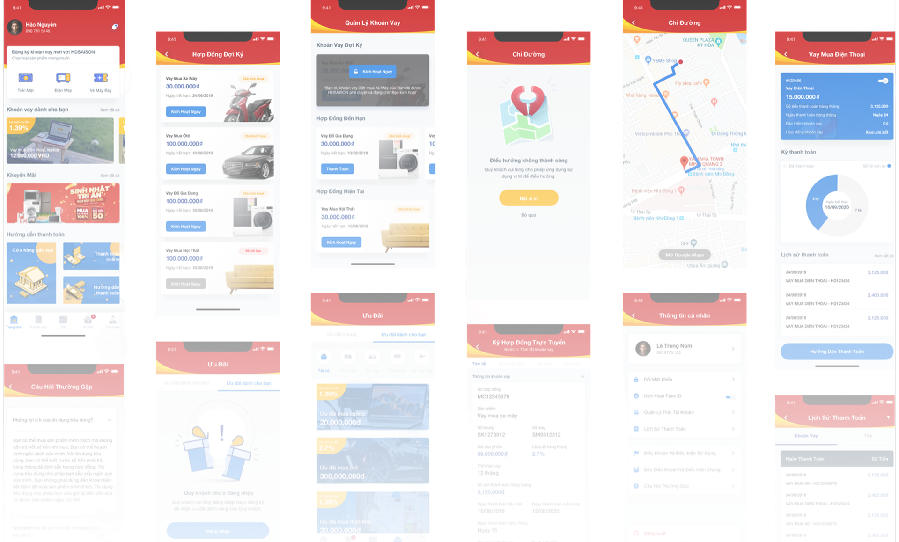

Overview
Business problem statement
HD Saison originated 100% of its loans in-branch — the only lender in its five-company peer set with no digital path at all, in a segment whose growth had just fallen from 38% to 15% in a year (published). There was no existing product to fix; the app was built from zero, and it had to close the errors the paper process left to counter staff — hand-keyed customer data, documents caught wrong only at underwriting, a whole contract set re-signed because one field was wrong — each one sending a file back a stage, and the customer back to the counter.
Business goal
E-signature
One binding electronic signature, covering the original contract and any later correction to it.
Loan Management
One place to see loan balance, payments and due dates.
Payment Integration
Repay a loan without going back to a dealer or branch.
Remarketing System
Re-engage past borrowers for their next loan.
Every loan
started at a counter
HD Saison is a joint venture between HDBank and Credit Saison, and it is very good at one thing: lending in person. Motorbike and appliance instalment loans, written across 14,000 service points and 9,000 retail partners, to more than 5 million customers (published). The brief listed four things to build: electronic signing, loan management, payment, and remarketing. Four goals, equal weight, no order given.
Discovery ran three months, from kickoff in June 2019 to the first prototype in September. We mapped origination end to end, and that is where the brief came apart. Four things kept surfacing, and none of them were on the list.
Four-stage approval
Borrowing took 3 to 5 hours across four stages, every one of them in person (client-reported).
The correction loop
One wrong field — ID number, address, date of birth, name — sent the customer back to the store to re-sign the whole set. Five to seven days to close (client-reported).
Drop-off at the counter
Borrowers gave up mid-application, and nothing recorded where.
Falling repeat-borrow rate
The repeat-borrow rate was quietly falling, and nobody could say why.
None of it arrived as a complaint. Borrowers treat this as how borrowing works, so it never showed up as feedback — only as people walking away mid-application. We had to draw the whole thing on paper before anyone could see it.

Four competitors had already left the counter
Vietnam's consumer credit market grew 30.4% in 2018 — but finance companies, HD Saison's own segment, slowed to 15% from 38% the year before (published). HD Saison was the third-largest lender in the country, and the only one of the three you could not reach without walking into a building.
Share of Vietnam's consumer lending market, 2018
- FE Credit 47.3%
- Home Credit 16.9%
- HD Saison 10.1%
- The rest of the field 25.7%
| Lender | Offline origination | Max loan | Monthly web visits | Published rate | Decision time | Brand health |
|---|---|---|---|---|---|---|
| JACCS | 66% | 80M VND | 38K | 11.3–49.9%/yr | Not disclosed | Not ranked |
| FE Credit | 78% | 70M VND | 1.07M | 35–48%/yr | Not disclosed | 23.8 |
| Home Credit | 82% | 200M VND | 431K | From 20%/yr | Not disclosed | 30.2 |
| EasyCredit | 86% | 100M VND | 62K | 22.6–42.4%/yr | Not disclosed | Not ranked |
| HD Saison | 100% | 100M VND | 116K | 15–63%/yr | 30–45 min | 24.4 |
HD Saison
INSIGHT
The third-largest lender in the country. Every loan began at a counter, which made walking in the only way in.
- Originated online
- 0%
- Max loan
- 100M VND
- Published rate
- 15–63%/yr
- Decision time
- 30–45 min
- Brand health
- 24.4
Signing first,
then everything downstream of it
The benchmark had settled what to build. Four competitors were already originating loans online while every HD Saison loan still started at a counter, and nobody disagreed about closing that gap. What it hadn't settled was what to build first. The brief listed four goals with equal weight and no order attached, so I ordered them by what each one needed before it could work at all.
Each tier needs the one below it.
Ranked level with the other three. But you can't market to a base you can still only reach inside a branch.
Both only reach a borrower whose loan already exists digitally. Put first, they serve the people who already got past the counter.
Every stage ended in a signature on paper, given at the counter. Until that moved, there was no branch visit to remove.

Three screens carried the reframe
The home screen ranks unsigned loans above every offer. Loan management makes the next payment obvious before it's late. And signing collapsed a whole contract set into one confirmation — the original, and any correction after it. Everything else in the brief was sequenced behind these three.
New Experiences
The three screens above carry the shape of the reframe; the other two carry its follow-through. Payment lives inside loan management rather than a destination of its own, and personalization narrows the package and promotion shown to what that customer is actually eligible for, instead of the same blast to everyone. All five are the shipped screens, not mockups — click through them below.
Experience List

It shipped,
and then I stopped looking
The app went live in May 2022 and hasn't stopped shipping since — v1.1.30 as of May 2026, #36 in Finance in Vietnam (published). E-signing is live in production: after approval, the customer signs the contract in the app. The self-serve idea we argued for in discovery now lives on the public website too — application, repayment calculator, loan lookup. The second door exists.
What I can't tell you is how many people walked through it. We set two targets in discovery: two-hour approval, and the one I cared about more — a contract error fixed in minutes instead of five to seven days on paper. I left in June 2021, eleven months before launch, and never saw either number land. If it had been mine to track, I'd have led with something else entirely: the share of loans originated without a branch visit, because that's the only number that actually tests the idea. Correction time next — the old clock was already running, since a salesperson's bonus rode on it. Then approval time against target, completion rate at signing, repeat-borrow rate for app users versus counter-only.
HD Saison has grown from 5 million customers across 14,000 service points to over 15 million across 26,500 (published). None of that is mine to claim — four years of growth has a lot of authors, and the honest version is that something I built is still running inside it. One number I do sit with: 3.0 ★ from roughly 2,500 ratings (published). Not a good score, and the first thing an interviewer will find.